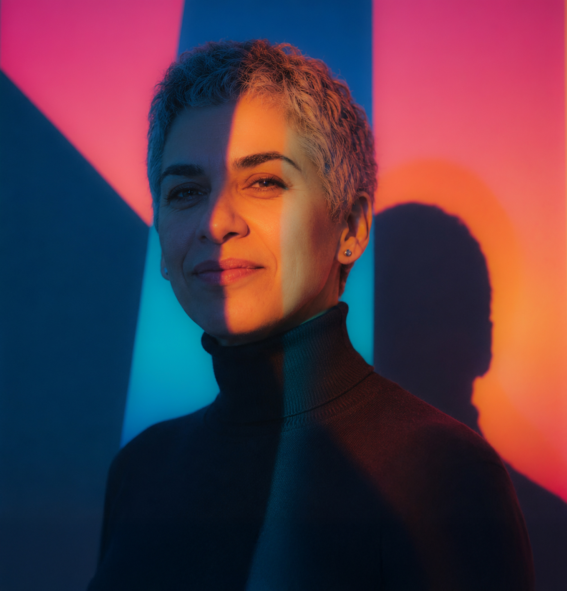

SVENSKA · NIVÅ B1I vardagenVad skulle du säga?
Digitalt lärande
Resurser som gör kunskap lättare att förstå och använda.
DIGITAL CONTENT DESIGNER · STOCKHOLM
Jag skapar digitala lärresurser och visuellt innehåll med fokus på tydlighet, kreativitet och användarens behov.
Se mina projekt
OM MIG
Jag arbetar med digital innehållsproduktion och visuell kommunikation, med särskilt fokus på lärande och användarvänliga upplevelser.
Min bakgrund inom grafisk design, undervisning och digital produktion hjälper mig att förena struktur med kreativitet och göra komplex information lättare att förstå.
FOKUSOMRÅDEN
Jag kombinerar pedagogik, form och digital teknik för att skapa innehåll som människor faktiskt använder.
Resurser som gör kunskap lättare att förstå och använda.
Bild och form som gör budskap tydliga och engagerande.
Genomtänkt struktur och digital publicering från idé till resultat.
UTVALT ARBETE
Tre exempel på hur innehåll, form och användarens behov möts i praktiken.
KONTAKT
Jag gör komplex information tydlig och användbar. Hör gärna av dig.